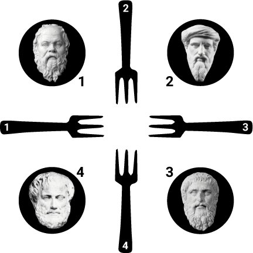
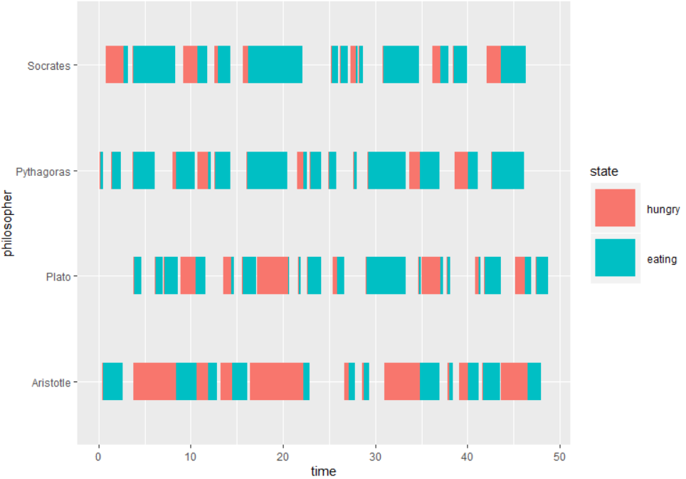

Dining Philosophers
The Dining Philosophers problem is a classical example in computer science to illustrate synchronisation issues in concurrent processes. It was originally formulated in 1965 by E. W. Dijkstra as a student exam exercise, and was later reworked in its current form by Tony Hoare:
Some philosophers sit at a round table with bowls of spaghetti with tomato sauce and tasty cheese. Forks are placed between each pair of adjacent philosophers.
Each philosopher must alternately think and eat. However, a philosopher can only eat spaghetti when they have both left and right forks. Each fork can be held by only one philosopher and so a philosopher can use the fork only if it is not being used by another philosopher. After an individual philosopher finishes eating, they need to put down both forks so that the forks become available to others. A philosopher can take the fork on their right or the one on their left as they become available, but cannot start eating before getting both forks.

The problem is how to design a discipline of behavior (a concurrent algorithm) such that no philosopher will starve; i.e., each can forever continue to alternate between eating and thinking, assuming no philosopher can know when others may want to eat or think.
Simulation
Let us define each philosopher as a process executing a thinking + eating loop, and acting concurrently on shared resources (the forks). Each process will follow a similar trajectory in which they
- Spend some random time thinking until they become hungry.
- Take one fork, when available, following a given policy.
- After some lag, take the other fork, when available.
- Spend some random time eating.
- Put both forks down and go back to 1.
The following function sets up a simulation of $N$ dining philosophers as established above:
////DiningPhilosophers.kt
package org.kalasim.examples
import krangl.*
import kravis.geomSegment
import kravis.plot
import org.kalasim.*
import org.kalasim.misc.repeat
fun main() {
class Fork : Resource()
class Philosopher(name: String, val leftFork: Fork, val rightFork: Fork) : Component(name) {
val thinking = exponential(1)
val eating = exponential(1)
override fun process() = sequence {
while(true) {
hold(thinking())
request(leftFork) {
hold(0.1) // wait before taking the second fork
request(rightFork) {
hold(eating())
log("$name is eating")
}
}
}
}
}
val sim = createSimulation(true) {
val ec = collect<Event>()
// create forks and resources
val names = listOf("Socrates", "Pythagoras", "Plato", "Aristotle")
val forks = repeat(names.size) { Fork() } //.repeat().take(names.size + 1).toList()
names.forEachIndexed { idx, name ->
Philosopher(name, forks[idx], forks[(idx + 1).rem(forks.size)])
}
run(50)
}
// Analysis (gather monitoring data (as in simmer:get_mon_arrivals)
data class RequestRecord(val requester: String, val timestamp: TickTime, val resource: String, val quantity: Double)
val tc = sim.get<EventLog>()
val requests = tc.filterIsInstance<ResourceEvent>().map {
val amountDirected = (if(it.type == ResourceEventType.RELEASED) -1 else 1) * it.amount
RequestRecord(it.requester.name, it.time, it.resource.name, amountDirected)
}
// transform data into shape suiteable for interval plotting
val requestsDf = requests.asDataFrame()
.groupBy("requester")
.sortedBy("requester", "timestamp")
.addColumn("end_time") { it["timestamp"].lag() }
.addColumn("state") { rowNumber.map { if(it.rem(2) == 0) "hungry" else "eating" } }
.filter { it["quantity"] gt 0 }
.ungroup()
// visualize with kravis
requestsDf.plot(x = "timestamp", xend = "end_time", y = "requester", yend = "requester", color = "state")
.geomSegment(size = 15.0)
}
To enable a strictly typed simulation, we declare the resource Fork and component Philosopher. The latter is associated to a process where the philosopher first thinks for some exponentially distributed time, takes a fork, meditates for a brief second, and finally takes the second fork once it becomes available. Both interactions modelled as requests where we use a self-releasing request context. Once the philosopher has eaten, the whole process starts over again.
A variable number of philosophers (here N=4) is instantiated and are equipped with forks on their left and right.
Our implementation follows the solution originally proposed by Dijkstra, which establishes the convention that all resources must be requested in order. This means that, in our simulation, Aristotle should pick fork 1 first instead. Without that convention, the simulation would stop soon at a point in which every philosopher holds one fork and waits for the other to be available.
Finally, we can transform the resulting monitoring data with krangl and visualize it with kravis.

See here for a jupyter notebook implementation of this example.
This example was adopted from the simmer manual.